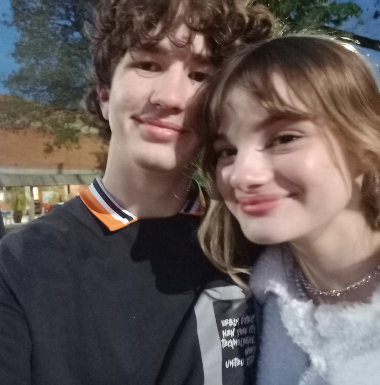
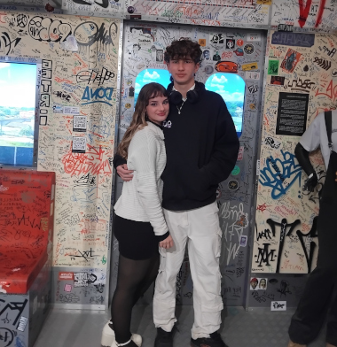
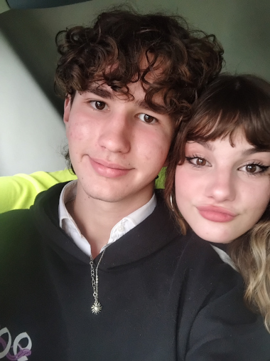
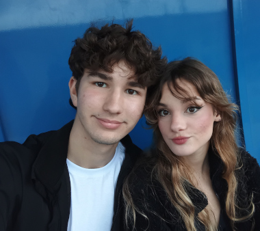

A HISTÓRIA DELES
Provavelmente você sabe que o Davi e sua namorada Emilyn são um dos louquinhos mais apaixonados do Mundo. Mas você talvez não saiba que eles já tiveram colares combinando, ou que eles já foram em um museu de HipHop só para se verem mais? Pois então acompanhe nossa matéria e se surpreenda com detalhes que talvez você não percebeu no namoro desses dois pombinhos.
Onde Tudo Começou
A primeira vez que esse dois de fato interagiram, foi para lá de estranho, Emilyn estava em seu grupo de amigos estranhos, quando de repente, aparece Davi tentando dar lição de moral... Foi uma péssima introdução e os dois fingem que isso nunca aconteceu...
Então, avançamos no tempo para o dia da festa junina. Lá, havia uma apresentação, e advinha quem era esposa da apresentação... Exato, ela mesmo. Davi, com seu jeitinho deveras esquisito, ficava observando a Emilyn sem parar, e obviamente ela percebeu, pórem gostou do rapaz observador.
Então, em um piscar de olhos, os dois já estavam namorando, se amando, e que a pouco casando...

Essa é a primeira foto dos dois, ficou bem lindo né.
O Museu do HipHop
Depois que eles souberam que ia ter um passeio, logo ficaram inquietos, só pensando em ir para se verem o dia todo.
E bem, deu certo, mas vamos admitir, não era para lá de intreressante o passeio, na verdade foi um tédio.

Apesar de tudo, os dois disseram que foi gostosinho e bom. Deve ser porque os dois encheram o buxo lá.
O Colar
Sabia que antes dos novos colares, eles tinham outros combinando? Poise, é curioso porque não há mais vestígios dos colares, porém as fotos não mentem.

A ideia era o mais agitado usar o Sol e o mais calmo usar a Lua, porém vai me dizer qual é qual? Os dois estão em completa mudança toda hora.
A Festa Farroupilha
Foi um dia cômico, além dos dois brigarem por causa de um salchipão, ele ficaram dançando valsa logo depois.
Para os dois, nada impede de ter um dia bom, nem mesmo a chuva, que na verdade, só fez os dois ficarem ainda mais próximos,
Dia dos Namorados

Como não esqueçer, não é verdade? Esse dia está com toda certeza no top-list de melhores dias dos namoradas ever... o Davi disse que literalmente Tudo foi perfeito, desde o xis e o cinema, até o xingão da Emilyn e a gente ter perdido o ônibus ha ha ha.
Outro fato curioso sobre esse dia é que eles compraram dois ingressos para um cinema em outra cidade... E tiveram que comprar outros ingressos para verem um filme que não era o planejado.
- Amor
- Reciprocidade
- Paixão
- saudade
- beleza
- paciência
- Integridade
- Comunicação
- Respeito
- Lealdade
- Confiança
- compromisso
Então é isso! Espero que você tenha gostado do meu site Amor, eu te amo muito mesmo de coração, nem tudo vai ser sempre como a gente que mas como você diz... FAZ PARTE.